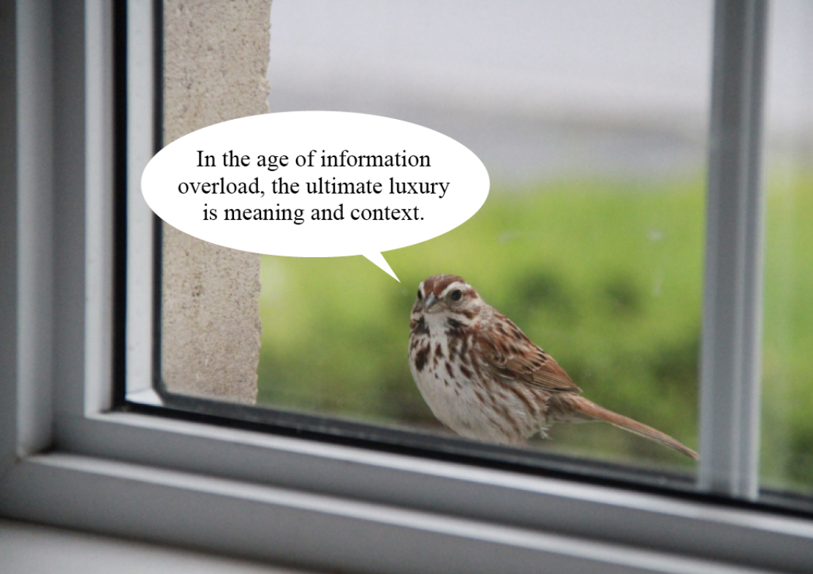
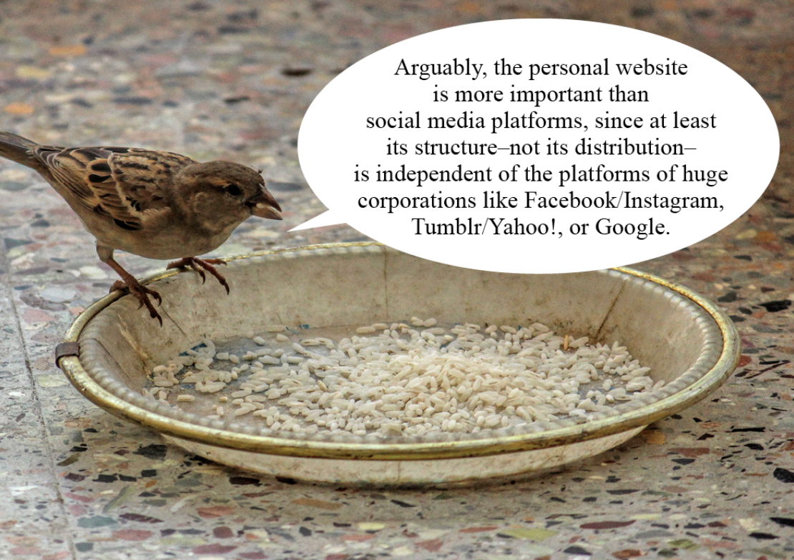

"My website will be a mirror of my IRL self, a space where I can fully express myself without the constraints of commercial platforms."
"Websites are the smallest unit of the web. This means they’re the simplest, most atomic way of expressing something online."
 Click the image to see the reading
The author delves into the metaphorical and philosophical aspects of personal websites. She compares her website to a "mobile home next to a river of knowledge", which I think reflects many of the characteristics of a personal website, such as mobility, adaptability and evolving nature. The author introduces a novel concept of the website as a living entity that 'grows' according to the owner's experiences, learning and interactions. I find it refreshing to see how designers, for example, unconsciously use their latest technology when building their personal websites. And after a while, if their aesthetic preference changes, they update the site accordingly. So I think a website can be seen not only as a static portfolio, but also as a dynamic response to a designer's interests and personal growth.